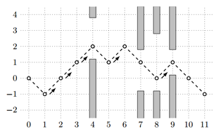

BZPRO
#4723. [POI2017]Flappy Bird
内存限制：128 MiB
时间限制：10 Sec
提交
提交记录
讨论
题目描述
《飞扬的小鸟》是一款风靡的小游戏。在游戏中，小鸟一开始位于(0,0)处，它的目标是飞到横坐标为X的某个位置
上。每一秒，你可以选择点击屏幕，那么小鸟会从(x,y)飞到(x+1,y+1)，或者不点击，那么小鸟会飞到(x+1,y-1)
。在游戏中还有n个障碍物，用三元组(x[i],a[i],b[i])描述，表示在直线x=x[i]上，y<=a[i]或者y>=b[i]的部分
都是障碍物，碰到或者擦边都算游戏失败。请求出小鸟从(0,0)飞到目的地最少需要点击多少次屏幕。
输入格式
第一行包含两个整数n(0<=n<=500000),X(1<=n<=10^9)。
接下来n行，每行三个整数x[i],a[i],b[i](0<x[i]<X，-10^9<=a[i]<b[i]<=10^9)。
数据保证x[i]<x[i+1]。
输出格式
如果无论如何都飞不到目的地，输出NIE，否则输出点击屏幕的最少次数。
样例
样例输入
4 11
4 1 4
7 -1 2
8 -1 3
9 0 2
样例输出
5
数据范围与提示
